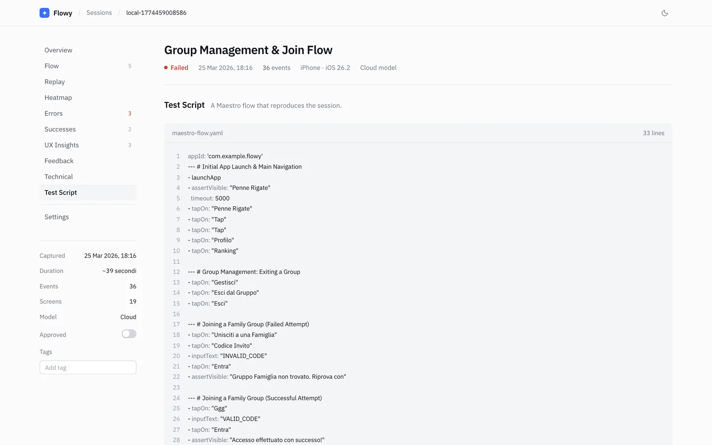
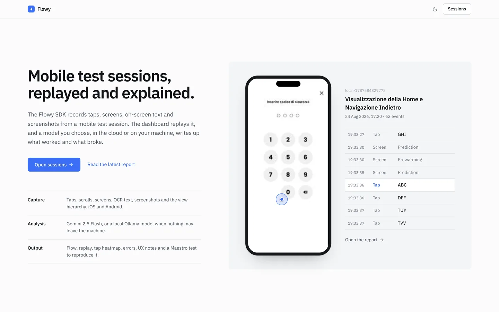
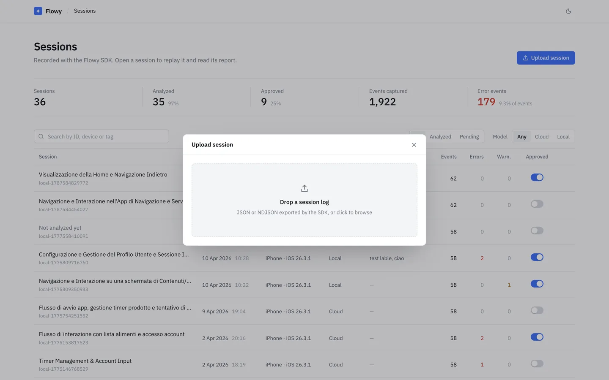
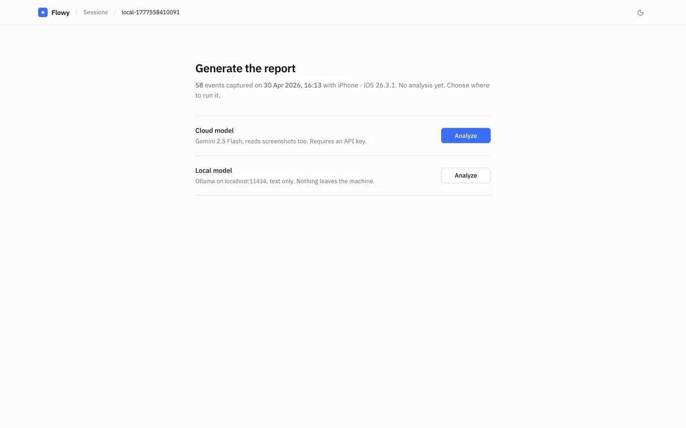
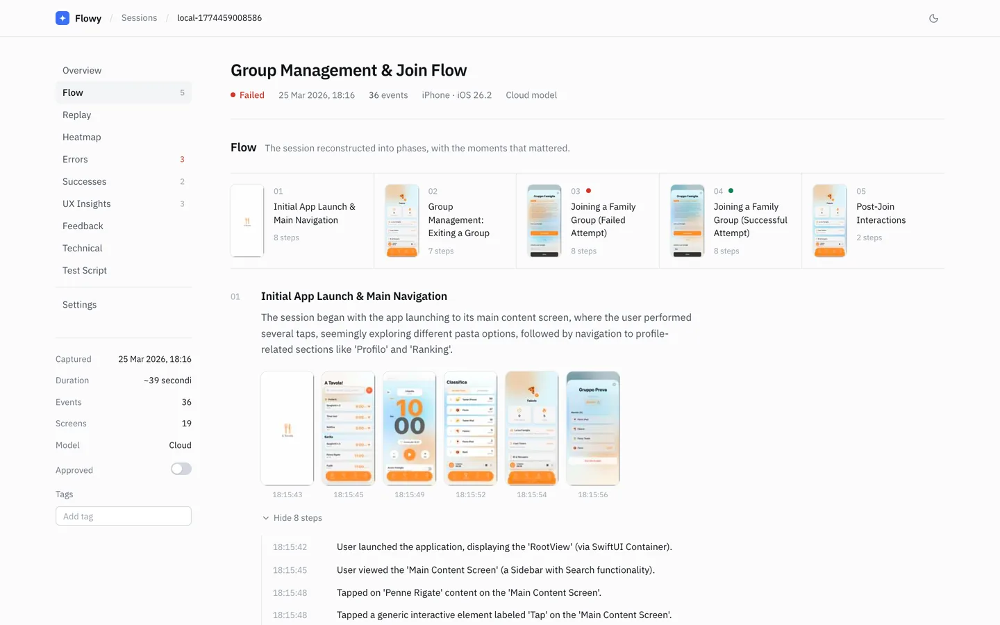
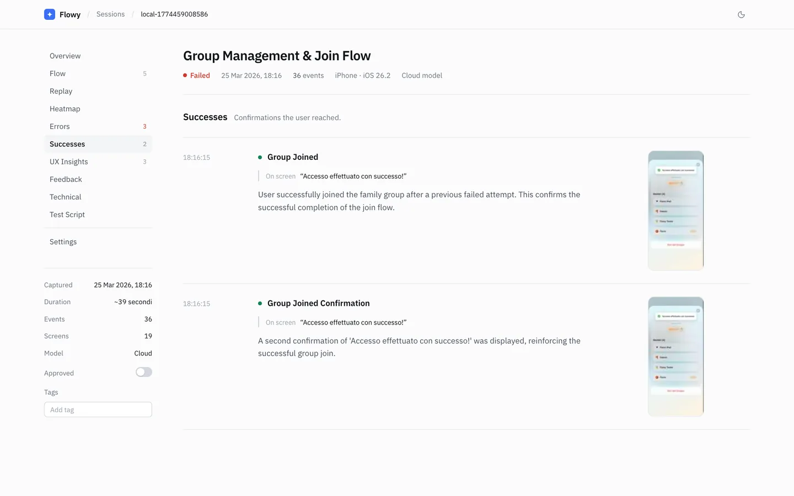
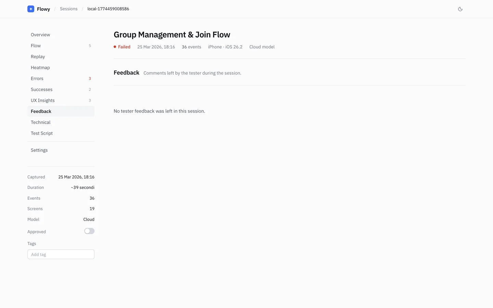
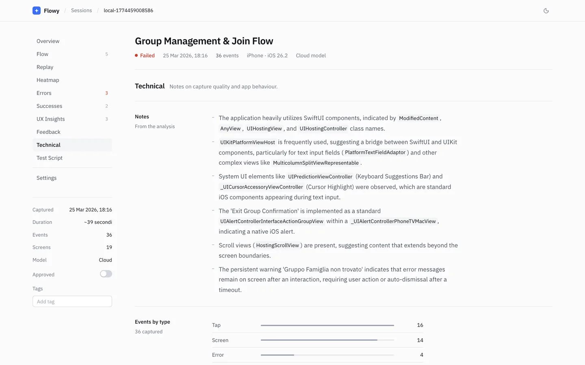
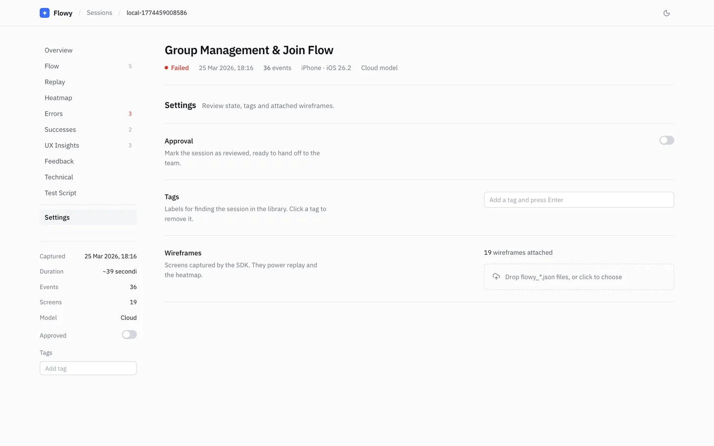

The SDK
Reads each screen’s view hierarchy and accessibility tags, captures frames and runs OCR on them, and blurs anything sensitive before it leaves the device.
Testers used to shake the phone, write what went wrong and hope one screenshot was enough. Flowy records the whole journey in the background and turns it into a replay, a tap map and a plain-language account of what happened. Nobody has to report anything.
My role Idea, UX, iOS SDK and analysis platform, end to end.
Recording · illustrative session
The team paid for an external tool: a tester shook the device, wrote a description and sent it. It captured technical logs and a single screenshot. Everything else depended on an unpaid tester deciding to report, and describing the defect well enough for someone else to rebuild it.
One session, frame by frame. What the old report sent.
The brief was a log that tells the user’s journey, not just the app’s: sent automatically at the end of every session and light enough not to notice. Each one comes with a replay of the session (three to four minutes on average), a map of the taps and an automatic analysis.
Reads each screen’s view hierarchy and accessibility tags, captures frames and runs OCR on them, and blurs anything sensitive before it leaves the device.
A multimodal model running locally, for security and privacy, rebuilds the journey: flows, rage taps, blocks, errors, and where the person succeeded or gave up.
The SDK has to see enough to rebuild a journey without becoming heavy to send or invasive to use. Three triggers decide when a frame is taken; two rules decide what survives.
Time-based frameTapScreen changeDuplicate, dropped
Sessions land in the library when they end. Once analysed, each one is named after what the person did. Nobody wrote a description.
Each session gets a verdict, completed or failed, the path it followed and a readable account of what worked and what needs attention.
The captured screens play back against the event timeline. A tap shows where it landed; the frames around it stay in reach.
Taps collect on each screen as a matrix, so repeated taps on the same spot stand out instead of disappearing into a count.
Every problem comes with the text read from the screen and the frame it appeared on, in the order it happened.
Findings are checked against usability heuristics, each with a recommendation, so a designer knows where to look first.
Technical log
POST /notifications
200 OK
payload valid
✓ PASSFlowy
FRAME 0:41 · in-app notification
OCR: content does not match
the action just completed
✗ DEFECTThe API answered correctly. The notification the person saw was wrong. Technical logs called it a pass; reading the screen caught it.
0
Reporting is completely transparent. Nobody shakes, writes or chooses what to send.
0
Churn that can be attributed to the effort of reporting alone.
>50%
Estimated from interviews: we compared the problems testers had reported with the problems they knew about but had never reported. Most report the first issue of the day and fewer after it; Flowy captures the rest without asking.
≈85% Local model (Gemma 4 E4B)
Near-total Frontier models, same log
Just over 8 actions in 10 with the local model, which is not optimised for this job: some OCR misreads and a less tidy reconstruction of the flow. The same log on frontier models came back almost complete, with small doubts only where the screen reading disagreed with the OCR report.
Two journeys, the service blueprint with its technology, the information architecture and every screen of the dashboard.
What a tester does when something goes wrong, and what reaches the team as a result.
Tester effortBeforeWith Flowy
Before
With Flowy
Team receives, before
Team receives, with Flowy
Measured
Effort levels are estimates. Select a step to look closer.
Step 1 of 6
Nothing to learn and nothing to turn on: the SDK ships inside the app build.
Step 2 of 6
Before, a defect existed for the team only if an unpaid tester judged it worth reporting.
Step 3 of 6
The old tool depended on the tester describing the defect well enough for someone else to rebuild it, from technical logs and a single screenshot.
Step 4 of 6
Surveys and interviews showed testers report the first issue of the day and fewer after it. Testers lost to reporting fatigue: 0.
Step 5 of 6
The most useful CX evidence was the least likely ever to be reported, because the person didn’t experience it as a bug.
Step 6 of 6
One frame a second for the first 120 seconds, then one every 30 seconds while idle. Duplicates are dropped and sensitive fields blurred before the file leaves the device.
The person who analyses the sessions: from rebuilding a story out of logs to checking one that is already told.
Analysis effortBeforeWith Flowy
Before
With Flowy
Where in Flowy
Still needs a person
Measured
Effort levels are estimates. Select a step to look closer.
Step 1 of 6 · Sessions library
Sessions are sent at the end of every session. The designer starts from a complete list, not an inbox of complaints.
Step 2 of 6 · Replay
With the local model just over 8 actions in 10 are recognised. Frontier models rebuild the same log almost completely.
Step 3 of 6 · Errors
In the first adoptions this caught a defect the technical logs had passed: the API answered correctly, the in-app notification was wrong.
Step 4 of 6 · Heatmap
Taps collect per screen, so repeated taps on one spot stand out instead of disappearing into a count.
Step 5 of 6 · UX insights
The account is a starting point. The designer checks it against the replay before acting on it.
Step 6 of 6 · Test script
A test script reproduces the flow, and every finding carries the evidence behind it.

From the first tap to the designer’s review: what the tester sees (nothing), what the SDK and platform do behind it, and the technology at each step.
01Session starts
02Person uses the app
03A frame is taken
04Session ends
05Stored
06Analysed
07Reviewed
Physical evidence
Tester
Visible to the tester
SDK, on the device
Platform
Designer
Technology
Two levels: a library of sessions, and a report per session whose left navigation opens eleven views. Approve, tags, filters and delete are actions on those views, not screens of their own. Hover a view to preview it; select it to find its screen below.
ViewFlowShortcutReport navigation
Library
Session report
Findings
Hand-off
Report nav
HomeStatement · latest session · open the librarySessions librarySearch · status and model filters · approve · deleteUpload a sessionDrop the SDK’s JSON logGenerate the reportCloud model or local modelOverviewVerdict · journey · what worked · attention pointsFlowPhases with their screens and stepsReplayFrame by frame against the event timelineHeatmapTaps per screenErrorsText on screen + the frameSuccessesUX insightsHeuristics and recommendationsTester feedbackTechnical notesEvent counts, capture factsTest scriptA test that replays the flowSession settingsApprove · tags · attach framesEvery view of the dashboard, connected as a designer moves through it. Hover to enlarge, select to open full size. Demo session throughout.
Entry
Session report
Findings
Hand-off and settings







